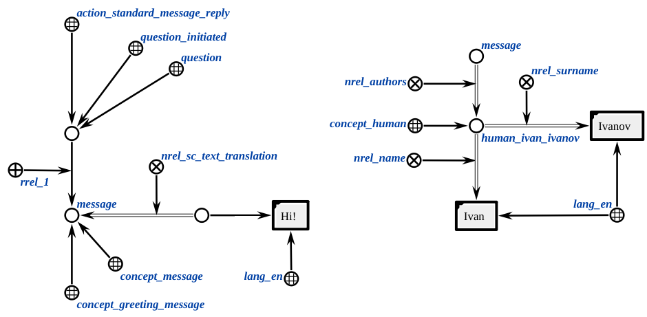
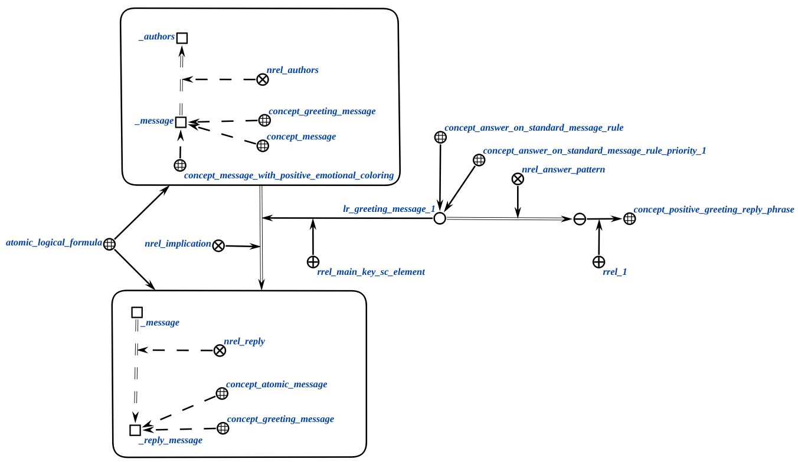
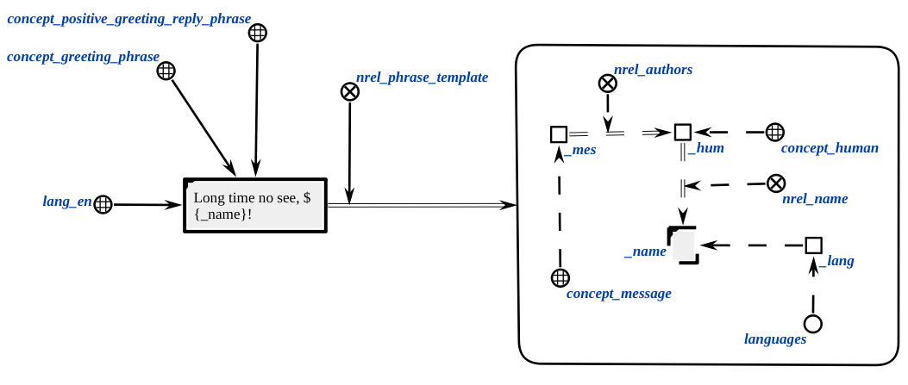
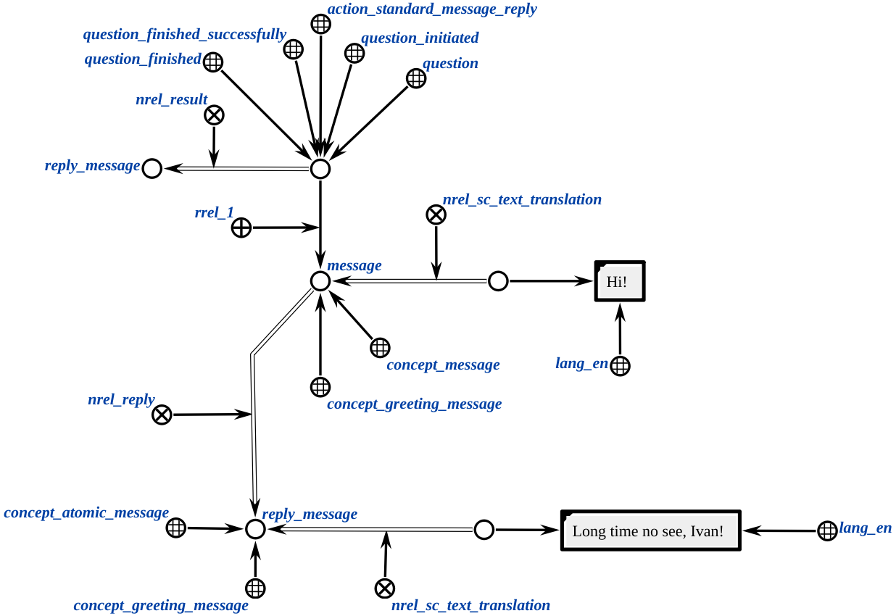
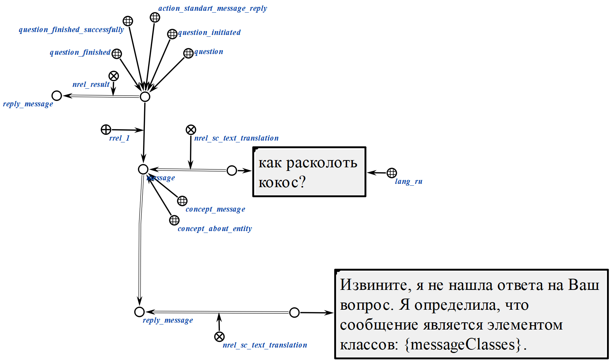
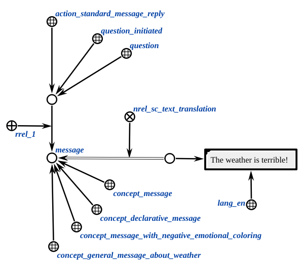
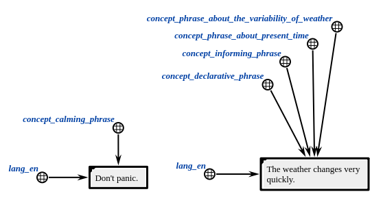
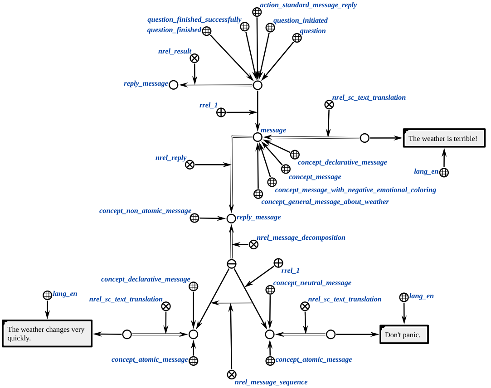

Агент генерации ответа на сообщение
Агент, который создает ответное сообщение на основе существующих правил в базе знаний. Агент использует генерацию фраз и агентов прямого вывода.
Сначала StandardMessageReplyAgent создает структуру ответного сообщения. Собирает логические правила и целевой шаблон, затем пересылает информацию DirectInferenceAgent (агенту из подсистемы scl-machine) для дальнейшей обработки. Вы можете узнать больше про DirectInferenceAgent в документации scl-machine. Если DirectInferenceAgent завершил работу успешно, StandardMessageReplyAgent вызывает PhraseGenerationAgent, чтобы создать sc-ссылку с текстом ответного сообщения. Если целевой шаблон ответного сообщения не был найден в качестве заключения логческого правила, StandardMessageReplyAgent создает структуру ответа по умолчанию с sc-ссылкой, содержащей текст о том, что не было найдено ответное сообщение, и перечисление классов, к которому принадлежит узел сообщения пользователя.
Класс действий:
action_standard_message_reply
Параметры:
messageAddr-- элемент классаconcept_messageиconcept_atomic_messageилиconcept_non_atomic_message.
Пример
1. Генерация атомарного сообщения
1.1. Пример входной структуры:

1.2. Пример логического правила:

1.3. Пример фразы:

1.4. Пример выходной структуры (атомарное сообщение):

1.5 Пример выходной структуры ответного сообщенения по умолчанию:

где {messageClasses} - множество классов, которому принадлежит узел messageAddr.
2. Генерация неатомарного сообщения
2.1. Пример входной структуры:

2.2. Пример логического правила:

2.3. Пример фразы:

2.4. Пример выходной структуры (неатомарное сообщение):

Результат
Возможные результаты:
SC_RESULT_OK- создано сообщение с ответом.SC_RESULT_ERROR- внутренняя ошибка.SC_RESULT_ERROR_invalid_params- у действия нет входящего сообщения.# Агент генерации ответа на сообщение
Агент, который создает ответное сообщение на основе существующих правил в базе знаний. Агент использует генерацию фраз и агентов прямого вывода.
Сначала StandardMessageReplyAgent создает структуру ответного сообщения. Собирает логические правила и целевой шаблон, затем пересылает информацию DirectInferenceAgent (агенту из подсистемы scl-machine) для дальнейшей обработки. Вы можете узнать больше про DirectInferenceAgent в документации scl-machine. Затем он вызывает PhraseGenerationAgent, чтобы создать sc-ссылку с текстом ответного сообщения.
Класс действий:
action_standard_message_reply
Параметры:
messageAddr-- элемент классаconcept_messageиconcept_atomic_messageилиconcept_non_atomic_message.
Пример
1. Генерация атомарного сообщения
1.1. Пример входной структуры:
1.2. Пример логического правила:
1.3. Пример фразы:
1.4. Пример выходной структуры (атомарное сообщение):
2. Генерация неатомарного сообщения
2.1. Пример входной структуры:
2.2. Пример логического правила:
2.3. Пример фразы:
2.4. Пример выходной структуры (неатомарное сообщение):
Результат
Возможные результаты:
SC_RESULT_OK- создано сообщение с ответом.SC_RESULT_ERROR- внутренняя ошибка.SC_RESULT_ERROR_invalid_params- у действия нет входящего сообщения.